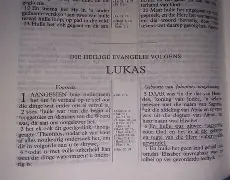
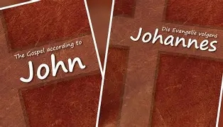
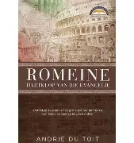
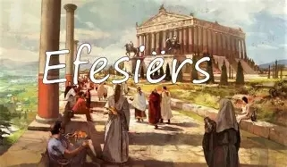
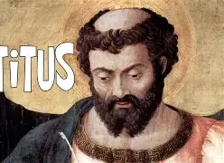
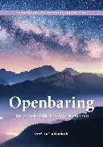

- 1ste van die 4 evangelies.
- Nie 1 van die dissipels nie.
- 2de van die 4 evangelies.

- 3de van die 4 evangelies.
- Skryf dit in die regte volgorde (kronologies).
- Skryf ook Handelinge.

- 4de van die 4 evangelies (skryf ook 3 briewe en Openbaring).
- Johannes was die lieflingsdissipel (Johannes, Jakobus en Petrus het in Jesus se binnekring beweeg)
- Joh 1:12: “Maar aan almal wat Hom aangeneem het, die wat in Hom glo, het Hy die reg gegee om kinders van God te word.”
- Joh 3:16: “God het die wêreld so lief gehad dat Hy sy enigste Seun gegee het, sodat die wat in Hom glo, nie verlore sal gaan nie maar die ewige lewe sal hê.”
- Joh 14:6: “Ek is die weg en die waarheid en die lewe. Niemand kom na die Vader toe behalwe deur My nie.”
Opsomming van die evangelies:
- Die 12 dissipels:
- Petrus (Simon) & Andreas (broers)
- Jakobus & Johannes (seuns van Sebedeus)
- Filippus
- Bartlomeus
- Matteus
- Tomas
- Jakobus (Jesus se broer)
- Taddeus
- Simon die fanatikus
- Judas Iskariot wat Jesus verraai het
- Die Onse Vader (Mat 6:9 & Luk 11:2):
- Jesus leer die dissipels bid
- Gelykenisse:
- Die saaier (Mat 13:1-23)
- Die onkruid (Mat 13:24-30)
- Die mostertsaad (Mat 13:31-32)
- Die suurdeeg (Mat 13:33)
- Die verborge skat (Mat 13:44)
- Die kosbare pêrel (Mat 13:45-46)
- Die visnet (Mat 13:47-50)
- Die 2 skuldenaars (Luk 7:40-50)
- Die onbarmhartige dienskneg (Mat 18:23-35)
- Die barmhartige Samaritaan (Luk 10:25-37)
- Die ryk dwaas (Luk 12:16-21)
- Die waaksame dienskneg (Luk 12:35-48)
- Die onvrugbare vyeboom (Luk 13:6-9)
- Die verlore skaap (Luk 15:3-7)
- Die verlore muntstuk (Luk 15:8-10)
- Die verlore seun (Luk 15:11-32)
- Die onregverdige bestuurder (Luk 16:1-13)
- Lasarus en die ryk man (Luk 16:19-31)
- Die onregverdige regter (Luk 18:1-8)
- Die Fariseër en die tollenaar (Luk 18:9-14)
- Die arbeiders in die wingerd (Mat 20:1-16)
- Die ponde/talente (Luk 19:11-27)
- Die goeie Herder (Joh 10:1-18)
- Die 2 seuns (Mat 21:28-32)
- Die landbouers (Mat 21:33-46)
- Die bruilof (Mat 22:1-14)
- Die tien jong meisies (Mat 25:1-13)
- Die talente (Mat 25:14-30)
- Die skape en die bokke (Mat 25:31-46)
- Die ware wynstok (Joh 15:1-8)
- Kruiswoorde:
- Vader, vergeef hulle want hulle weet nie wat hulle doen nie. (Luk 23:34)
- Ek verseker jou: Vandag sal jy saam met my in die paradys wees. (Luk 23:43)
- Daar is u seun (aan Maria). Daar is jou moeder (aan Johannes). (Joh 19:26-27)
- My God, my God, waarom het U My verlaat? (Mat 27:46)
- Ek is dors. (Joh 19:28)
- Dit is volbring. (Joh 19:30)
- Vader, in U hande gee Ek my gees oor. (Luk 23:46)
- Hand 1:8 “...julle sal my getuies wees in Jerusalem sowel as in die hele Judea en in Samaria tot in die uithoeke van die wêreld.”
- Hemelvaart is 40 dae na opstanding.
- Uitstorting van die Heilige Gees is 10 dae na hemelvaart (vuurtonge op mense se koppe).
- Stefanus word gestening (1ste martelaar).
- Saulus se bekering. Naam verander na Paulus.
- Paulus word afgesonder deur die gemeente van Antiogië om sendingwerk te doen.
- Paulus en Silas in die tronk. Sing lofliedere. Aardbewing. Word vrygelaat.
- Paulus voor die Joodse raad.
- Paulus beroep hom op die keiser.
- Paulus se reis na Rome.
- Paulus op die eiland Malta. Slang pik hom, maar kom niks oor nie.

- Rom 3:21-31, 4:5 Word vrygespreek uit genade, nie deur die wet te onderhou nie. (Vergelyk met Jak 2:14)
- Rom 9: Uitverkiesing.
- Rom 12:9: Riglyne vir die Christelike lewe.
- Rom 13: Verpligting teenoor die owerheid.

- Verdeeldheid
- Raad oor die huwelik (1 Kor 7)
- Liggaam van Christus (1 Kor 12:12)
- Liefde (1 Kor 13)

- Gespanne verhouding tussen die gemeente en Paulus: misverstande oor Paulus se veranderde reisplan en sy gesag as apostel.
- 2 Kor 13:13: “Die genade van die Here Jesus Christus en die liefde van God en die gemeenstap van die Heilige Gees sal by julle almal wees.” (Seëngroet in kerk)
- Paulus waarsku gemeente in Galasië teen dwaalleraars:
- Betwyfel Paulus se gesag
- Hulle sê nie-Jode kan slegs gered word deur ook die wet te onderhou (kom ooreen met die brief aan die Romeine)

- Eenheid van die kerk
- Christen se wapenrusting: waarheid (gordel), vryspraak (borsharnas), bereidheid om die evangelie te verkondig (skoene), geloof (skild), verlossing (helm) en die woord van God (swaard).
- Uit die gevangenis geskryf
- Fil 3:7: “Maar wat eers vir my ‘n bate was, beskou ek nou as waardeloos ter wille van Christus.”
- Fil 4:4: “Wees altyd bly in die Here.”
- Fil 4:6: “Moet oor niks besorg wees nie, maar maak in alles julle begeertes deur gebed en smeking met dangsegging aan God bekend.”
- Fil 4:13: “Ek is tot alles in staat deur Christus wat my krag gee.”

- Kom baie ooreen met brief aan Filippense – waarsku teen dwaalleraars.
- Verlossing word alleen deur die kruisdood van God se seun verkry, nie deur wette na te kom nie.
- Die ou en die nuwe lewe.

- Paulus spreek sy dankbaarheid uit oor die gemeente in Tessalonika se standvastigheid in geloof, liefde en hoop.
- Beantwoord vrae oor die opstandig en wederkoms.

- Enkele maande na die 1ste brief geskryf.
- Gelowiges in Tessalonika nogsteeds verwar: hulle het die wederkoms in hulle eie leeftyd verwag.

- 1 & 2 Timoteus en Titus is aan individue geskryf, nie aan gemeentes nie. Handel oor die vereistes van die ampsdraers (kerkraad). Word die pastorale boeke genoem.
- Vereistes van ouderlinge en diakens.

- Moedig Timoteus aan om te volhard in tye van toenemende afvalligheid.
- Gebruik die Skrif as maatstaf.
- 2 Tim 3:16: “Die hele Skrif is deur God geïnspireer en het groot waarde om (1) in die waarheid te onderrig, (2) dwaling te bestry, (3) verkeerdhede reg te stel en (4) ‘n regte lewenswyse te kweek.

- Brief gerig aan Titus (een van die 3 pastorale boeke).
- Titus het om Kreta die gemeentes georganiseer en ouderlinge aangestel.
- Suiwer persoonlike brief aan Filemon.
- Onesimus was Filemon se slaaf. Onesimus het vir Paulus ontmoet in die tronk en het ‘n Christen geword. Paulus stuur Onesimus terug na Filemon en vra dat hy Onesimus sal terugvat, nie net as ‘n slaaf nie, maar ook as ‘n broer in Christus.
- Geskryf aan gelowiges wat besig was om in die geloofstryd uit te sak.
- Jesus Christus is meer verhewe as engele.
- Christus, die ware hoëpriester.
- Christus die volkome offer.
- Heb 10:25: “Ons moenie van die samekomste van die gemeente af wegbly soos party se gewoonte is nie, maar mekaar eerder aanmoedig om daarheen te gaan, en dit des te meer namate julle die oordeelsdag sien nader kom.”
- Versoeking en verleiding.
- Moenie volgens die uiterlike oordeel nie.
- Jak 2:14: As jy glo, sal jou dade dit ook bewys. (Vergelyk met Rom 3:21-31, 4:5)

- Losgekoop met die kosbare bloed van Christus.
- Gedrag van mans en vroue teenoor mekaar.
- Dit is ‘n voorreg om te ly vir wat reg is.

- Die Christen se roeping en verkiesing.
- Die wederkoms en die oordeelsdag
- 3:8: “vir die Here is een dag soos duisend jaar en duisend jaar soos een dag.”
- 3:10: “soos ‘n dief in die nag”

- Liefde vir mekaar.
- 1 Joh 4:10: “Werklike liefde is dít: nie die liefde wat ons vir God het nie, maar die liefde wat Hy aan ons bewys het deur sy Seun te stuur as versoening vir ons sondes.”

- Waarheid en liefde.

- Aan ‘n kerkleier, Gaius: Johannes prys Gaius vir die goeie werk wat hy in die gemeente doen.

- Judas, broer van Jesus en Johannes of Judas wat aan Paulus en Barnabas hulp verleen het.
- Die dwaalleraars en hulle straf.

- Johannes skryf Openbaring in die tronk – gebruik daarom baie beelde.
- Briewe aan die sewe gemeentes: (1) Efese, (2) Smirna, (3) Pergamun, (4) Tiatira, (5) Sardis, (6) Filadelfia en (6) Laodisea (3:16 “Maar nou, omdat julle lou is, nie warm nie en ook nie koud nie, gaan Ek julle uit my mond uitspoeg.”)
- Ondergang van Satan.
- Die nuwe hemel, die nuwe aarde en die nuwe Jerusalem.